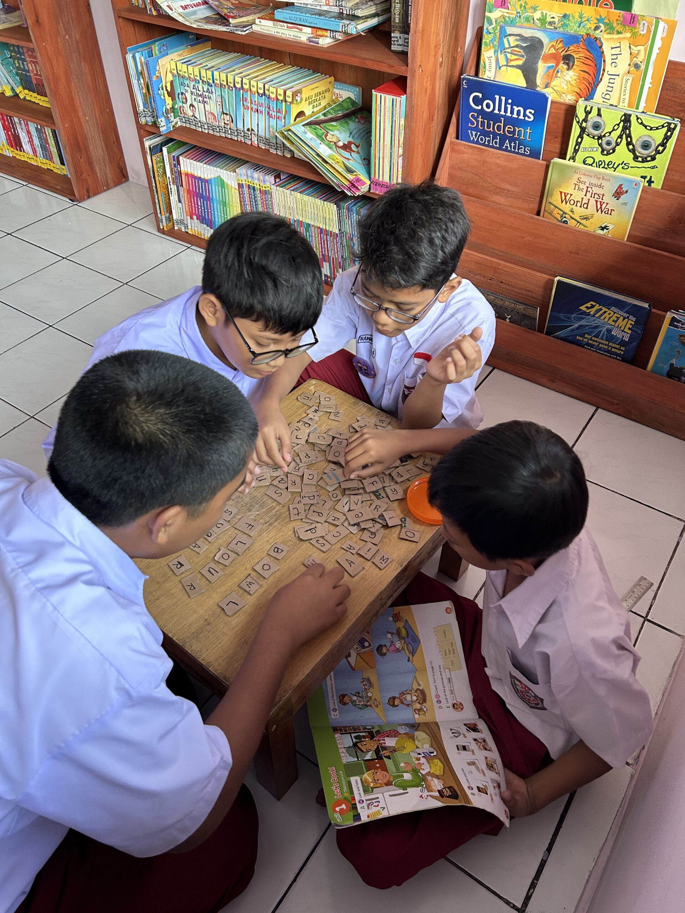

ACCREDITATION
Terakreditasi A Nasional (2022)
Mafatih Islamic School meraih akreditasi A pada tahun 2022 sebagai pengakuan resmi atas mutu pendidikan, kurikulum, dan tata kelola sekolah.
Lihat Halaman Akreditasi →Penerimaan Peserta Didik Baru (PPDB) Tahun Ajaran 2027/2028 telah dibuka untuk jenjang Elementary Level (Full-Day & Online School) serta Secondary Level (Online School) di bawah naungan Yayasan Generasi Aman Sentosa.

Mafatih Islamic School meraih akreditasi A pada tahun 2022 sebagai pengakuan resmi atas mutu pendidikan, kurikulum, dan tata kelola sekolah.
Lihat Halaman Akreditasi →
Memadukan Tahfizh Qur'an, pendidikan adab aplikatif, My Pals Science, Math Champion, Baina Yadaik, dan terbitan Mafatih.
Pelajari Kurikulum →
Kuota maksimal 24 siswa per kelas 1. Pendaftaran Tahun Ajaran 2027/2028 Gelombang I dibuka 1 Oktober – 31 Desember 2026.
Prosedur & Formulir PPDB →Program pembaruan kegiatan tahsin Al-Qur'an untuk menumbuhkan kecintaan siswa terhadap bacaan Al-Qur'an yang baik dan benar.
Penilaian Tengah Semester yang diikuti seluruh peserta didik Mafatih Islamic School Jakarta sebagai evaluasi capaian belajar.
Belajar ilmu hayati secara langsung di Animalium BRIN serta publikasi rutin Mading dan Cerpen Siswa berbahasa Inggris.
Kepercayaan para orang tua selama bertahun-tahun dalam mendidik generasi Qur'ani yang berakhlakul karimah, mandiri, dan kreatif di Mafatih Islamic School Kalibata.
“Alhamdulillah, apa yang kami cari dari sebuah Sekolah Dasar untuk anak kami Ghafi, kami temukan di Mafatih Islamic School Kalibata.”
— Orang tua Ghafi Benzema Ragafala“Selama hampir 7 tahun berinteraksi dengan Mafatih dan tahun ini anak ke-3 saya insyaAllah masuk kelas 1, alhamdulillah.”
— Orang tua Fatih, Faza, dan Faiz“Mafatih Islamic School adalah sekolah yang bisa membentuk karakter anak dengan berakhlakul karimah, mandiri, kreatif, dan menjadi generasi Qur'ani.”
— Orang tua Haneefa dan Hilya · (Juga testimoni Orang tua Kholid)